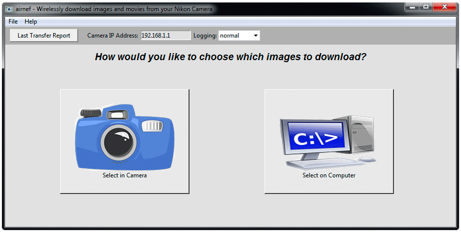

|
airnef - Wireless download from your Nikon Camera! |
This is the official homepage of Airnef, my open-source utility for downloading images and movies from your WiFi-equipped Nikon camera. Airnef runs on Windows, Mac, and Linux. It supports all Nikon cameras that have built-in WiFi interfaces, along with those using external Nikon WU-1a and WU-1b WiFi adapters. Airnef may also work with Nikon's WT-4A and WT-5A wireless adapters for the D3/D4/D8x, although I don't have any of these adapters on hand to test. Airnef supports Canon and Sony cameras as well, although Canon supplies its own excellent EOS Utility for wireless downloads. Airnef is licensed under GPL v3.
Airnef is written in the Python programming language and is distributed in both installable form (Windows and OS X, directory of binaries for Linux) and as a source tree that can execute on any platform supporting Python 2.7.x or 3.4.x.
Dates |
Ver |
Change List |
Windows Installer |
OS X application |
Linux Binary |
Python Source Code |
| 10/09/2015 | 1.1 | 1.00 -> 1.1 | airnef-installer-v1.1.exe | airnef_v1.1_Source.zip | ||
09/11/2015 |
N/A |
Airnef is two applications - a GUI front-end and a command-line app. The GUI front-end allows you to visually select the criteria of which images to download and then launches the command-line app to perform the transfer. You can optionally use the command-line version directly to script your transfers.
|

This is a partial list of camera's I've personally tested. Even if your camera is not listed it may still work.
| Camera | Select Images in Camera | Select Images on Computer | Realtime Download1 |
| All Nikon cameras built-in WiFi | Yes |
Yes | All DSLRs2 |
| All Nikon cameras with WU-1a/WU-1b Adapter | No3 | Yes | Yes |
| All Canon Cameras with WiFi | No | Yes | Yes |
| All Sony Cameras with WiFi | No | Yes | Staged Realtime4 |
| Nikon D750, D7200 | Yes | Yes | Yes |
| Nikon J4, J5 | Yes | Yes | Staged Realtime4 |
| Canon 6D | Yes | Yes | Yes |
1An easy way to tell if your camera supports Realtime Download is if it allows you to take photographs while its WiFi interface is enabled and in the mode required by Airnef. For example most Nikon DSLRs support shooting with WiFi enabled. In contrast, Sony cameras (in the Send to Computer mode) and the Nikon J4/J5 require you to leave the WiFi mode before you can use the functionality of the camera again
2Nikon 1 cameras with built-in WiFi such as the J4 and J5 do not support Realtime download but can use staged realtime transfers
3Nikon bodies using an external WU-1a or WU-1b WiFi adapter have no separate menu option for selecting images to upload and the alternate mechanism of selecting images for upload in the playback menu (present in cameras with native WiFi support like the D7200) is unavailable because the playback menu is disabled when WiFi is on for cameras with an external WiFi adapter.
4Staged Realtime means the camera doesn't support taking photographs while in the WiFi mode required by Airnef but you can achieve faux-realtime transfers by shooting any number of photos in non-WiFi mode then turning your camera's WiFi on to automatically transfer those images to Airnef, then turn your camera's WiFi back off to resume shooting. You can repeat this any number of times while running a single Airnef session (no intervention required on computer). More details here.
Here are a few post-installation Windows tips that will help make Airnef more convenient to use:
Here are a few post-installation OS X tips that will help make Airnef more convenient to use:
Instead of running the bundled Python environment that ships with the pre-built executables you can also run the source through your existing Python installation. Airnef supports both Python 2.7.x and 3.4.x environments. OS X and most Linux distributions install Python by default. For Linux the Tkinter GUI framework may not come preinstalled; you can install it via "sudo apt-get install python-tk". For Windows you'll need to download and install Python - I suggest enabling the option to add Python to your system path during the installation. For Linux and OSX you may need to set the airnef.pyw and airnefcmd.py as executable via 'chmod +x airnef.pyw' and 'chmod +x airnefcmd.py'
By default your Nikon camera has an IP address of 192.168.1.1 and runs without encryption. You can modify both the IP address and wireless security via a one-time procedure using Nikon's Wireless Mobile Utility app (iOS and Android). Nikon has published instructions on modifying the security settings here. Modifying the IP address of your camera is useful if you run a typical network configuration that has the router at 192.168.1.1, which conflicts with the camera and makes it impossible to use a wired connection to your router/Internet at the same time you'd like to download from the camera. Here are instructions for the one-time procedure to change your cameras IP address:
Nikon recently introduced their SnapBridge technology on the D500. SnapBridge is an "always-on" connectivity feature that allows the camera to use a low-power bluetooth connection to send JPEGs to a smartphone/tablet, both automatically in realtime as photographs are taken and manually if the user prefers to select specific images to download. Most SnapBridge implementations including the one of the D500 also include WiFi capability to allow for faster download of a large batch of images from the camera. Fortunately this WiFi implementation is identical to the MTP implementation on previous Nikon bodies, which means it is compatible with Airnef. Unfortunately, Nikon only allows the WiFi on SnapBridge-enabled cameras to be activated through the SnapBridge app - Nikon removed the ability for users to manually turn on the WiFi from the camera. This means that in order to use Airnef with SnapBridge-featured cameras you must first use the SnapBridge app to activate the camera's WiFi, then intervene to have Airnef to connect to the camera's WiFi network before the SnapBridge app does. Here are instructions on how to do this for both the iOS and Android versions of the SnapBridge app:
One-Time Setup:
Activating the camera's WiFi using the iOS SnapBridge App:
Activating the camera's WiFi using the Android SnapBridge App:
Additional Details:
To enable wireless transfer-to-desktop functionality Sony cameras require a one-time configuration setup that must be performed with the camera attached to the computer via USB. You'll see this message if you haven't done the configuration. For Windows the setup is performed using Sony's PlayMemories Home application. For OSX the setup is done using Sony's Wireless Auto Import application. Sony doesn't provide a Linux application but if you can get access to a Windows or OSX machine you can perform the one-time setup on that system and then use Airnef under Linux thereafter, even on a system other than the one in which you authenticated via the one-time setup using Sony's software.
Here are the one-time setup instructions:
Sony's Send to Computer functionality requires that you perform a one-time wireless setup on your camera. Unlike the 'Send to Smartphone' feature where the camera creates its own ad hoc wireless network that you connect to, the Send to Computer' feature requires that the camera connect to your existing wireless network/router. Here are the steps to perform this one-time wireless setup on your camera:
Each use of the camera's Send to Computer function supports only a single wireless session with a client like Airnef. For Airnef a wireless session is defined as anytime you press the 'Start Download' or 'Preview File List for Criteria', including all files that Airnef downloads/lists as part of that session. When the wireless session to the camera is over Airnef will automatically send a command to the camera to take it out of the Send to Compute (and put the camera into sleep mode), provided the session terminates cleanly (ie, you don't press <ctrl-c> within the command window to abort the session early). If the session does not terminate cleanly/properly then the camera will stay in the Send to Computer mode after Airnef's session has ended - because this mode only supports a single wireless session any future connection attempt from Airnef will be unsuccessful. To resolve this you will have to manually cancel out of the the Send to Computer mode on the camera and then re-enter the mode again.
Canon cameras support SSDP Discovery, which allows Airnef to automatically discover the IP address of your camera when you've set the camera's IP address to "Auto". Simply type "Auto" for the Camera IP address field in Airnef. However, SSDP Discovery may not work on all systems so if Airnef is failing to discover your camera then use the Manual IP address method instead. Canon supports both ad hoc and infrastructure modes - for ad hoc the camera creates its own wireless network that you connect your computer - for infrastructure the camera connects to your existing home/work wireless network. In ad hoc mode Canon cameras typically use a fixed IP address of 192.168.1.2. For infrastructure mode Canon lets you specify either 'Auto' or a static IP address of the camera. When using a static IP address make sure to select an address outside the range of DHCP addresses that your router is configured to supply. For example if the DHCP range of the router is 192.168.1.100 to 192.168.1.200 then select an IP address below 192.168.1.100 or above 192.168.1.200 (don't pick 192.168.1.1 because that is likely the address of your router). For this example you can use 192.168.1.20, with a subnet mask of 255.255.255.0 and a default gateway of 192.168.1.1 (gateway is the router's IP address).
After you create the wireless configuration on your Canon camera, the camera will usually wait for a connection from a wireless client (Airnef in this case) to complete the configuration, which then associates that specific client to the wireless configuration/set. If you have an existing wireless configuration that you've used with other non-Airnef clients then you'll have to recreate the setup to allow the camera to associate the configuration with Airnef.
If you are using a camera that connects to your existing wireless network in infrastructure mode rather than creating its own ad hoc wireless network then your wireless performance may reach only half its potential because two nodes on an infrastructure network can't communicate directly like they can on an ad hoc wireless network - this means that all data from the camera to your computer must make two trips, one from the camera to your wireless router and another from the router to your computer. This applies to all Sony cameras in 'Send to Computer' mode and Canon cameras where you've elected to use infrastructure mode instead of ad hoc. You can avoid this double-trip penalty by using a wired connection from your computer to the router - that way the data from the camera only has to take one trip over your wireless network.
The best resource for learning how to use Airnef is the Youtube tutorial linked at the top of this page.
Airnef provides two basic methods for selecting which images/movies to download - in the camera or on your computer. The benefit of selecting in the camera is that you can visually preview the images(s) first. The downside is that it's more cumbersome to select a large number of images. Also, some models limit the types of files you can select within the camera. For example the D7200 doesn't allow video files to be selected. Consumer-level cameras like the Nikon 1 J4 only let you select JPEGs. Fortunately both raw and video files can be downloaded on all camera models using the computer selection method within Airnef.
Airnef is really two separate applications - a Graphical Interface (airnef) and a Command-Line program (airnefcmd). The graphical interface lets you to visually specify your download options, which are then passed to airnefcmd to perform the actual downloads. You can optionally use the command-line program directly, which enables you to script/automate your downloads. See the Command Line Reference in this page for details.
Airnef maintains a permanent download history of every file you transfer. Airnef uses this history to allow you to automatically skip over files you've already transferred, without having to specifically set a criteria that excludes those files. Airnef's default behavior is to skip files that are in its download history; you can override this behavior by unchecking the "Skip images/movies you've previously downloaded" option in each of the dialogs.
The Airnef GUI tries its best to be intuitive by remembering all the options you specified on your last download, along with the last 32 directories you've used. These options are saved every time you initiate a download operation.
Airnef supports a realtime download mode, where it will transfer images from your camera as you shoot them. Only certain camera models support taking photographs while in the WiFi mode used by Airnef - see the camera feature matrix here for details. Even if your camera doesn't support taking pictures while WiFi is enabled you can still achieve faux-realtime transfers (termed 'staged realtime') by taking pictures with WiFi off and turning your camera's WiFi mode on - when Airnef detects the camera it will automatically transfer the images you've taken. You can tell when the staged transfers are done on Sony cameras by waiting for the Send to Computer screen to go away - Airnef actually puts the camera into sleep mode after the downloads complete, which conserves battery life if you leave the camera unattended after enabling WiFi. For other camera models you can watch the SD/CF access light (usually green) and wait for it to stop flickering, indicating that the transfers are done. You can then turn WiFi back off and resume shooting. You don't have to wait for the transfers to complete before turning WiFi back off - if you turn WiFi off in the middle of a transfer Airnef will remember which image it was downloading when it lost the WiFi connection to the camera and then resume downloading from that point when the camera's WiFi is available again. This process can be repeated any number of times while Airnef is running. You can also use this staged process on cameras that support actual realtime shooting as well, for example if you want an opportunity to review/delete images before they're transferred by Airnef , or to conserve battery life by keeping WiFi off most of the time, or if you're taking photos at a far distance from the computer/router and WiFi reception will be poor and slow. Staged transfers are particularly useful on Nikon cameras using external WU-1a/WU-1b WiFi adapters because that setup disables access to the image review function while the WiFi adapter is enabled, so the only way to review images before they're transferred is by disabling WiFi. Canon bodies let you review images while in WiFi mode and let you delete image(s) as well - if you delete an image that Airnef is actively transferring then Airnef will detect the deletion and skip to the next file.
As part of Airnef's staged download support the camera does not have to be powered on (or its WiFi enabled) when you start the realtime download mode. Simply press the 'Start Download' within Airnef and it will enter a connection loop waiting for the camera to become available. However on Canon and Nikon cameras the realtime mode will launch faster if the camera is available when 'Start Download' is pressed (this allows Airnef to avoid the initial download of file information at the start of realtime mode).
When using the realtime download mode your camera's clock must be synchronized with the system clock of your computer - this is necessary because Airnef uses the timestamp of the images you taken to establish which images were shot in realtime (ie, shot after you started Airnef). Failing to keep the clock's synchronized means either Airnef will skip over the realtime images you take (if the camera's clock is running behind your system clock) or transfer images that were taken before you started Airnef (if the camera's clock is running ahead of your system clock). Fortunately Airnef automatically synchronizes the camera's clock on most Nikon and Canon cameras - you only need to assure that the camera's time zone and DST setting (Daylight Savings Time for USA users) are matched between camera and system, as these attributes aren't programmable over the WiFi connection.
You can use the realtime download mode either in combination with the normal transfer mode or by itself in a realtime-only mode. When used in combination with the normal transfer mode Airnef will first transfer all the images that match your selected criteria, then enter the realtime download mode when those transfers are complete. This allows you to transfer images you already have on the camera while shooting new, realtime images as well - in other words, you can start shooting new images immediately without waiting for the download of the existing images to complete. When configured for realtime-only mode Airnef will ignore any existing images you have on the camera and only download images that were taken after Airnef is started (specifically, after the 'Start Download' button is pressed).
Regardless of which realtime mode you use, Airnef will apply the selection criteria you specified in the dialog for realtime downloads the same as it does for normal downloads (the only exception is the capture date criteria, which naturally doesn't apply to realtime downloads since you're instructing Airnef to transfer images taken now). For example if you've configured Airnef to only download JPG files but have the camera configured for raw+JPG, Airnef will only download the JPG files shot in realtime. The same applies to the 'Media Card' configuration - if your camera has dual media slots but you've configured Airnef to only download images from slot #2, Airnef will only download realtime images that the camera saves to slot #2.
By default Airnef will poll the camera every 3 seconds to check for new images to download. This interval was selected to strike a reasonable balance between responsiveness and battery life. You can modify the polling interval via the --realtimepollsecs option. Use a shorter interval if you'd like Airnef to respond to new images faster, or a longer interval to increase battery life. Any value above 30 seconds will likely cause the camera to drop the WiFi connection due to an inactivity timeout - for very long polling intervals I suggest turning the camera's WiFi off/on during shooting so that you can manually decide when images should be transferred.
See the Download Exec section below for optionally launching an image viewing application for each downloaded file, which is especially useful for realtime downloads.
Here is a video demonstration of the realtime download feature:
Airnef can optionally launch an application of your choice for each file downloaded, in both normal or realtime download modes. For example you can automatically launch an image review application to display each image as it's downloaded. This feature is accessed via the --downloadexec command option, which can be entered in the 'Additional Args' field of the GUI. The behavior of downloadexec can be further configured via --downloadexec_extlist (to limit which file types your application is launched for and downloadexec_options (various options such as waiting for the launched app to complete before continuing to next download).
When launching an image viewing application via downloadexec you'll typically want to configure the application for single window/instance operation (if supported) - that way each downloaded image will be displayed in the same window instead of creating a bunch of separate windows.
Here are some sample command-line recipes for various popular image viewing applications. For best results you should copy 'n paste these sample commands lines rather than typing them yourself.
FastStone Image Viewer - Microsoft Windows (link)
By default FastStone operates in single-window mode when launched by Airnef. To configure the window in which the image is displayed go to to Settings -> 'Associated images launches in' and choose one of the following per your preference 'Full Screen', 'Browser View', 'Windowed View'.
32-bit Windows: --downloadexec "C:\Program Files\FastStone Image Viewer\FSViewer.exe" @pf@
64-bit Windows: --downloadexec "C:\Program Files (x86)\FastStone Image Viewer\FSViewer.exe" @pf@
Irfanview Image Viewer - Microsoft Windows (link)
By default Irfanview operates in multi-window mode. To configure single-window mode go to Options -> Properties/Settings... -> Start/ Exit options -> 'Only 1 instance of Irfan View is active'. Note that Irfanview doesn't support raw images so --downloadexec_extlist JPG is included in these sample command lines:
32-bit Windows: --downloadexec "C:\Program Files\IrfanView\i_view32.exe" /file=@pf@ --downloadexec_extlist JPG
64-bit Windows: --downloadexec "C:\Program Files (x86)\IrfanView\i_view32.exe" /file=@pf@ --downloadexec_extlist JPG
FastRawViewer - Microsoft Windows (link)
By default FastRawViewer operates in multi-window mode. To configure single-window mode go to File -> Preferences -> Other -> 'Run single program instance'.
32-bit/64-bit Windows: --downloadexec "C\Program Files\LibRaw\FastRawViewer\FastRawViewer.exe" @pf@
64-bit Windows running 32-bit version of FastRawViewer: --downloadexec "C\Program Files (x86)\LibRaw\FastRawViewer\FastRawViewer.exe" @pf@
Image Preview - Mac/OSX (built-in application)
By default the OSX preview image operates in single-window mode.
Open using default viewing application (most systems this is Image Preview): --downloadexec open @pf@
Open using Image Preview specifically: --downloadexec open ~a Preview @pf@
FastRawViewer - Mac/OSX (link)
By default FastRawViewer operates in multi-window mode. To configure single-window mode go to File -> Preferences -> Other -> 'Run single program instance'.
--downloadexec /Applications/FastRawViewer.app/Contents/MacOS/FastRawViewer @pf@
Eye of GNMODE (eog) - Linux (included with most Linux distributions - link)
--downloadexec eog ~~single-window @pf@
Airnef allows you to customize the names of directories and filenames for the images you download via a simple, mini-scripting language, accessible via the the --dirnamespec and --filenamespec command line options. You can enter these options in the 'Additional Args' field of the GUI. Below are some examples to help get you started.
Include the model of the camera in the downloaded filename.
Sample Output: D7200_DSC_0119.NEF
--filenamespec @cameramodel@_@filename@
Create a directory based on the capture date of each file and a filename based on the sequence number of each download (ie, first download seq # is 0001, second is 0002, etc..).
Sample Output: 20150928\Photo-0001.JPG
--dirnamespec @capturedate@ --filenamespec Photo-@dlnum@.@filename_ext@
Include a custom name for the camera based on the serial number. For example if you have two cameras, one with S/N 7104765 and another with 5462197 and you'd like images from the first camera to have "MyCamera" in the name and images from the second to have "JillsCamera". Note that the S/N Airnef uses is the one the camera reports via the wireless interface, which may have more or fewer digits than the S/N printed on the camera - you can view the serial number that Airnef uses in a download transfer report.
Sample Output: MyCamera_DSC_1125.NEF, JillsCamera_DSC_2535.NEF
--filenamespec @cameraserial@@replace~7104765~MyCamera@@replace~5462197~JillsCamera@_@filename@
When run with no options Airnef's default behavior is to either download every image that has been selected for download by the user on the camera's playback menu or, if no images were selected on the camera, to download every image/movie file it finds on the first populated memory card in the camera located at IP address 192.168.1.1 (Nikon's default IP address), storing the files into the current directory and skipping any files downloaded on previous invocations. Any name collisions with existing files will be resolved by generating unique filenames by adding a -new-x suffix (for example, DSC_1575.nef becomes DSC_1575-new-1.nef, DSC_1575-new-2.nef, etc...). Optional command-line arguments can be added to set the criteria of which files to download, where they should be downloaded, how filename collisions should be resolved, and other general behavior of the application.
All argument names are case sensitive but the optional values for each argument are case-insensitive. For example "--extlist" must be undercase but the actual extension list specified for that option can be any case (an "--extlist jpg" will match both .jpg and .JPG extensions for camera files).
You can abbreviate any argument name provided you use enough characters to uniquely distinguish it from other argument names. For example, --a in place of --action, if there are no other arguments that start with --a.
--help
Prints a help display listing all the typical options supported
!filename (changed from '@filename' to '!filename' in v1.1)
Load additional arguments from a text file. In addition to any parameter files you specify, airnefcmd will always load a file named 'airnefcmd-defaultopts' in its working directory if it exists (for Windows/Linux Airnef will look for this file in the directory Airnef was installed to; for OSX it will be in /Applications/airnef.app/Contents/Resources). The parameters from the default file will be loaded first, allowing you to override them with parameters from your own files and those specified on the command line. All parameter files must be formatted so that each parameter word is on a separate line, which is a requirement of Python's argparse routine. For example:
--action getsmallthumbs --extlist NEF JPG
--ipaddress address | auto ("auto" IP address support for Sony added in v1.1)
Specifies the IP address of the camera supporting the MTP-IP interface. If not specified the default is 192.168.1.1, which is the default for most Nikon cameras (although some of the newer cameras ship with a default of 192.168.0.1). On Canon the ad hoc wireless address is usually 192.168.1.2. Canon also supports wireless infrastructure mode, where instead of the camera serving as a temporary WiFi access point it can use an existing wireless network - for this mode you can configure the camera to any IP address you'd like. Sony cameras support only infrastructure mode, where the camera connects to your existing wireless network/router - the camera lets you choose either a manual IP address or Auto (DHCP-assigned) - if you choose the latter, specify --ipaddress auto and airnef will attempt to discover the camera's IP address using the Simple Service Discovery Protocol (SSPD). SSDP doesn't work on all systems so if airnef has trouble locating your Sony camera trying configuring the camera for a manual IP address instead.
--action [getfiles | getlargethumbs | getsmallthumbs | listfiles]
What action to perform. The default action 'getfiles' will download the full-sized version of the files. 'getlargethumbs' will download the large thumbnail of each image/video. 'getsmallthumbs' will download the small thumbnail of each image/video. Not all cameras support both large and small thumbnail downloads. 'listfiles' will generate a directory listing of files on the camera, sorted by the --transferorder option.
--realtimedownload [disabled | afternormal | only] (added in v1.1)
Download images in realtime as they're taken. The default is disabled, which means only the action specified by --action is performed. 'afternormal' means airnef will enter realtime download mode after downloading any images specified by --action . 'only' means airnef will enter realtime download mode immediately and not download preexisting images on the camera. All criteria options such apply to the normal and realtime download modes except those that aren't applicable once realtime mode begins, such as --startdate and --enddate. When using realtime download make sure your camera's clock is synchronized to your system clock because airnef sometimes relies on timestamps to distinguish between realtime photos and those already on the camera. For Nikon and Nikon cameras airnef automatically synchronizes your camera's clock to the system clock every time airnef runs - however even with this automatic synchronization you must still make sure the camera's time zone and DST setting (Daylight Savings Time for USA) match your system's settings. For other cameras you'll want to make sure your camera clock is synchronized. The frequency at which airnef checks the camera for realtime images can be controlled via --realtimepollsecs.
--extlist [extension ...]
Specifies which types of files (by extension) to download/list. If not specified airnef will download/list every file found. Multiple extensions can be included. Example: extlist NEF JPG MOV. In the unlikely case where a camera has downloadable files without extensions, include <noext> in the extlist to download those files as well.
--startdate and --enddate [mm/dd/yy] or [mm/dd/yy hh:mm:ss]
Selects the starting and/or ending creation-date criteria of files to download/list. There are two specifications supported - date-only or date+time. The dates/time is inclusive - any file created on or after startdate will be included; any file created on or before enddate will be included. Examples:
--startdate 05/06/15 (download all files created on or after 05/06/15 00:00:00)
--enddate 09/07/15 (download all files created on or before 09/07/15 23:59:59)
--startdate 05/06/15 --endddate 09/07/15 (download all files created on or after 05/06/15 00:00:00 and before 09/07/15 23:59:59)
--startdate 05/06/15 15:05:10 (download all files created on or after 05/06/15 3:05:10 PM)
--outputdir [directory]
The directory to store the downloaded files. The directory must already exist. Put quotes around the directory if it contains spaces. Example: outputdir "c:\My Documents". The default is the current working directory. If both --outputdir and --dirnamespec are specified then airnef uses --outputdir as the base directory and the directory name generated from --dirnamespec will be relative from that base directory.
--ifexists [uniquename | skip | overwrite | prompt | exit]
Specifies what action to take if a local file exists in the output directory matching a file to be downloaded. The default 'uniquename' will cause a unique filename to be generated by adding -new-x suffix (for example, DSC_1575.nef becomes DSC_1575-new-1.nef, DSC_1575-new-2.nef, etc...). 'skip' will cause the file to be skipped and not downloaded - be careful when using this option without the --camerafolderinoutputdir option, because if the same root filename exists in multiple folders on the camera then this will cause the file in all folders but the first to be skipped. 'overwrite' will overwrite the local file with the downloaded file - the same caution as 'skip' applies regarding the same file in multiple camera directories. 'prompt' will present a choice of actions to take on the console (uniquename/skip/overwrite/prompt/exit). 'exit' will cause the application to terminate whenever an existing file with the same name as a download candidate is found - note that the existence check of a given file is performed just before the download begins.
--downloadhistory [skipfiles | ignore | clear]
Controls how the file download history is handled for this invocation. Airnefcmd maintains a database of all files it has downloaded for a given camera model/serial number combination. Each file in the database is identified by the combination of its name, creation date, and size; these three elements together allow Airnef to guarantee against false positives/negatives of the history. The default 'skipfiles' will skip any file that is in the download history. 'ignore' will cause airnefcmd to ignore the download history for this invocation when deciding whether to download a given file - ie, it will download files even if they're in the download history. Note that the download history will still be updated for any files downloaded during 'ignore' invocations; this allows the history to be utilized on future invocations when 'ignore' is not specified. 'clear' will delete the entire download history for the connected camera model/serial number at the start of execution; the download history will still be updated for any files downloaded during the session.
--onlyfolders [folder ...]
List of folders
on the camera from which to download from. Any downloadable file(s) found that are not in one of the list folders will not be downloaded/listed. Example: onlyfolders 100D7200 101D7200. The default is to download/list from any folder on the camera. In the unlikely case where a camera has downloadable files in the root directory, include <root> in the list to download those files as well. Be careful when using this option with realtime downloads because when a camera folder reaches its maximum file capacity the camera will create a new folder to store images and if that new folder is not included in your --onlyfolders list then any realtime images stored in that new camera folder will be excluded and not downloaded.
--excludefolders [folder ...]
List of folders on the camera from which to not download from. Any downloadable file(s) found that are in one of the list folders will not be downloaded/listed. The default is to not exclude any folders. In the unlikely case where a camera has downloadable files in the root directory, include <root> in the list to exclude the the download of those files as well.
--transferorder [oldestfirst | newestfirst]
Controls the order of which files are downloaded/list, based on their creation dates. When 'oldestfirst' is specified the oldest file on the camera will be downloaded/listed first, then the next oldest, etc... When 'newestfirst' is specified the newest file on the camera will be downloaded first, then the next newest, etc...
--slot [firstfound | first | second | both] ('both' option added in v1.1)
Determines which media slot/card on the camera will be selected to download/list files from. The default 'firstfound', which will select the first slot found populated with a media card. 'first' or 'second' will select the first or second slot respectively. 'both' will use both media cards. If your camera has two card slots and you have them configured in backup mode then specifying 'both' for slot is not recommended because airnefcmd's operation retrieve information about files on the camera will take twice as long yet only half of those files will be unique. If you still want to use 'both' in this configuration then only one file of the mirrored pair will be downloaded if --downloadhistory is set to 'skipfiles'. Using 'both' is also not recommended for real-time capture when the cards are operating in backup mode because the timestamp of the identical files across the two cards is often skewed by one second, which will cause airnefcmd to believe the files are unique and defeat the download history file timestamp-matching mechanism.
--cameratransferlist [useifavail | exitifnotavail | ignore]
Controls how to manage a potential camera transfer list, which is the list created by the camera when the user selects image(s) to download on the camera's playback menu. When airnefcmd runs it interrogates the camera to see if a transfer list exists; the cameratransferlist controls how airnefcmd is to respond to the existence or non-existence of this list. When 'useifavail' is specified airnefcmd will only download images within the transfer list, and will ignore all other selection criteria specified by the other command line options. The download history will still be utilized however, meaning any images previously downloaded will be ignored, depending on the setting of the downloadhistory option. When 'exitifnotavail' is specified airnefcmd will terminate if the camera's transfer list is empty (ie, there are no user-selected images for download), unless --realtimedownload is specified, in which case airnef will enter its realtime download mode instead of exiting. When 'ignore' is specified airnefcmd will ignore any potential transfer list on the camera and will instead download/list all images on the camera based on the criteria specified with the other command line options.
--filenamespec spec and --dirnamespec spec (added in v1.1)
Rename downloaded files using Airnef's renaming engine. Place spec in quotes if it contains any literal spaces. This can be applied to the filename and/or the directory (tree) where the file is stored. 'spec' contains your desired output name including optional specifiers, which offer the ability to insert dynamic data into the filename, such as the camera model, serial number, capture date, etc.. Each specifier is enclosed in @@ and can optionally include subscripts to only use a portion of the dynamic data and also options to change elements such as case. If you'd like preview/test your --dirnamespec and --filenamespec before attempting a download then use --action listfiles. The directory listing will show a preview of what the output directory/filename name will look like. Here is the full format of a specifier; everything after specifier name is optional:
@specifiername:subscript_start:subscript_end:options@
Here is the full list of support specifiers:
| Specifier | Description | Example |
| Capture Date/Time Specifiers | ||
| @capturedate@ | Capture date of file in yyyymmdd format | 20150924 |
| @capturedate_m@ | Capture date of file (month) in mm format | 09 |
| @capturedate_d@ | Capture date of file (day) in dd format | 24 |
| @capturedate_y@ | Capture date of file (year) in yyyy format | 2015 |
| @capturedate_dow@ | Capture date of file (day of week, numeric) [Monday=1, Tuesday=2...Sunday=7] | 4 |
| @capturedate_woy@ | Capture date of file (week of year) . Monday considered first day of week | 38 |
| @capturedate_month@ | Capture date of file (month, text) | September |
| @capturedate_dayofweek@ | Capture date of file (day of week, text) | Thursday |
| @capturedate_season@ | Capture season (Spring, Summer, Fall, or Winter) | Fall |
| @capturetime@ | Capture time of file in hhmmss format | 140513 |
| @capturetime_h@ | Capture time (hour) of file in hh format | 14 |
| @capturetime_m@ | Capture time (minute) of file in mm format | 05 |
| @capturetime_s@ | Capture time (seconds) of file in ss format | 13 |
| Download Date/Time Specifiers. The airnefcmd launch date/time is used as the download date/time for all files downloaded in the session | ||
| @dldate@ | Download date of file in yyyymmdd format | 20150924 |
| @dldate_m@ | Download date of file (month) in mm format | 09 |
| @dldate_d@ | Download date of file (day) in dd format | 24 |
| @dldate_y@ | Download date of file (year) in yyyy format | 2015 |
| @dldate_dow@ | Download date of file (day of week, numeric) [Monday=1, Tuesday=2...Sunday=7] | 4 |
| @dldate_woy@ | Download date of file (week of year) . Monday considered first day of week | 38 |
| @dldate_month@ | Download date of file (month, text) | September |
| @dldate_dayofweek@ | Download date of file (day of week, text) | Thursday |
| @dldate_season@ | Download season (Spring, Summer, Fall, or Winter) | Fall |
| @dltime@ | Download time of file in hhmmss format | 140513 |
| @dltime_h@ | Download time (hour) of file in hh format | 14 |
| @dltime_m@ | Download time (minute) of file in mm format | 05 |
| @dltime_s@ | Download time (seconds) of file in ss format | 13 |
| Capture Filename/Folder/Media Card Specifiers | ||
| @pf@ | Shortcut to @path@/@filename@ | c:\pics\DSC_0014.NEF |
| @path@ | Directory to local file (equal to --outputdir if no --dirnamespec, otherwise generated --dirnamespec for use by --filenamespec) | c:\pics |
| @filename@ | Local filename (full). Local filename can be different than capturefilename if download small or large thumbnails | DSC_0014.NEF |
| @filename_root@ | Local filename (root, without extension) | DSC_0014 |
| @filename_ext@ | Local filename (extension) | NEF |
| @capturefilename@ | Capture filename (full) | DSC_0014.NEF |
| @capturefilename_root@ | Capture filename (root, without extension) | DSC_0014 |
| @capturefilename_ext@ | Capture filename (extension) | NEF |
| @camerafolder@ | Camera folder of filename | 100D7200 |
| @slotnumber@ | Media card slot # file downloaded from (1 or 2) | 1 |
| Camera Make/Model/Serial Specifiers | ||
| @cameramake@ | Camera Make | Nikon |
| @cameramodel@ | Camera Model | D7200 |
| @cameraserial@ | Camera Serial Number | 35551323 |
| Download File Number Specifiers | ||
| @dlnum@ | The nth file downloaded this Airnef session (1..number of files downloaded) | 0045 |
| @dlnum_lifetime@ | The nth file downloaded for this camera model+serial for lifetime of Airnef | 5345 |
| Meta Specifiers | ||
| @replace~xxx~yyy@ | Replace every occurence of 'xxx' with 'yyy' for output string generated up to this point | @replace~NEF~Raws@ converts "NEF" to "Raws" |
| @replacere~xxx~yyy@ | Regular Express version of @replace. This uses the Python re.sub() function. Python regex reference here. | |
| @@ | Literal '@' | @ |
When both --dirnamespec and --filenamespec are specified, --dirnamespec is processed first. The output of --dirnamespec is then available as the updated @path@ for --filename spec. For example, if you use "--outputdir c:\pics --dirnamespec @cameramake@ --filenamespec whatever" with a Nikon camera, when --dirnamespec is processed the @path@ specifier translates to c:\pics. When --filenamespec is processed the @path@ specifier translates to c:\pics\Nikon
All specifiers except @replace@ can include optional subscripts to select a subset of characters from the generated specifier string. The first subscript is the starting character position. The second subscript is the ending character position (exclusive). An empty first subscript implies from the beginning of the string. An empty second subscript implies to the end of the string. Subscript values can be negative, which count from the end of the string.
Here are some examples based on a sample filename of DSC_0014.NEF:
| Example | What it Does | Output |
| @filename:4:8@ | Extract characters 4 through 7 | 0014 |
| @filename::3@ | Extract characters from beginning through 2 | DSC |
| @filename:4:@ | Extract characters 4 through end | 0014.NEF |
| @filename:-3:@ | Extract last three characters | NEF |
| @filename:-3:-2@ | Extract one character starting 3 from the end | N |
The case of any specifier's output can be changed via the options field. The only exceptions are the @replace@ specifiers which uses the entire entered case. The options field is after the two subscript fields - if no subscripts are required than use three ':' as placeholders to skip past them. Here are the available options:
| Option | What it Does |
| u | Entire specifier output is uppercased |
| l | Entire specifier output is lowercased |
| c | First character of specifier output is capitalized |
Here are some case examples based on a camera make of "Nikon":
| Example | What it Does | Output |
| @cameramake:::u@ | Entire specifier output is uppercase | NIKON |
| @cameramake:::l@ | Entire specifier output is lowercase | nikon |
| @cameramake:::c@ | First character of specifier output is capitalized | Nikon |
The @replace@ specifier is very powerful and allows you to perform search/replacement operations. It is performed on the generated output string at the point where the @replace@ occurs. This means it is performed after any other specifier replacements up to that point. Here are examples:
| Example | Sample Input | Output |
--filenamespec @cameraserial@@replace~35551323~Main Camera@_@dlnum@@filename_ext@ |
Serial #35551323, DSC_0014.NEF | "Main Camera_0001.NEF" |
--dirnamespec @cameramodel@\@filename_ext@@replace~NEF~Raw Files@ |
D7200 and DSC_0014.NEF | "D7200\Raw Files" (output directory) |
The directory name generated by --dirnamespec is relative to --outputdir (if specified) and can can include multiple directories - airnefcmd will recurse to generate the necessary tree of subdirectories for any directory that doesn't already exist within the path. For example, --outputdir c:\mypics --dirnamespec "@cameramodel@\@cameramake@\@cameraserial@" will create (if necessary) the directories c:\mypics\Nikon, c:\mypics\Nikon\D7200, and c:\mypics\Nikon\D7200\35551323. After processing --dirnamespec the resulting directory name/path is converted to an absolute path.
--downloadexec executable_specarg [specargs ...] (added in v1.1)
Launches an application/script for each file downloaded. 'executable' is the name of the app/script. 'specargs' is one or more arguments to pass to the launched application/script, using the same spec renaming mechanism provided by --dirnamespec/--filenamespec. At a minimum you'll likely need to pass the name of the downloaded file to your app/script, which you can do via --downloadexec myappname @pf@. Note that the @path@ specifier will refer to the generated path if you included a --dirnamespec, or absent that the output path if you specified --outputdir. The @filename@ specifier refer to the generated filename if you included a --filenamespec, plus a potential "--new-x" suffix to the root name if there was a file in the output directory with the same name as the generated filename (if --ifexists is set to
uniquename). If no --filenamespec was specified then @filename@ will refer to the capture filename stored on the camera, again with a potential "--new-x" suffix if the file had to be renamed due to a name conflict with an existing file in the output directory. Be careful when using this option with applications that aren't single-instanced, ie they start a new instance every time they're invoked. This can cause a large amount of application windows to be opened depending on how many files you're downloading. If the specifier result of the first argument results in an empty string then launching for that file will be skipped. You can specify different executables for various file types via use of the @replace@ specifier, for example: --downloadexec "@filename_ext@@replace~JPG~myappforjpgs.exe@@replace~NEF~myappfornefs.exe@" @pf@. By default all file types will invoke the downloadexec specification; use --downloadexec_extlist to limit by file extension. You can set additional exec options via --downloadexec_options.
To pass arguments that require a leading '-' or '--' prefix use '~' or '~~' instead. By default airnefcmd will convert the tilde characters of specarg into dashes after processing the secparg string(s) [it will not do this replacement on executable_specarg, to allow the use of tildes for the executable path/name]. Using tildes is required because any leading '-' or '--' prefix will be interpreted by airnefcmd as an argument to itself rather than an argument to pass to your launched application. If you need to use literal tildes in your argument string then you can disable this default replacement behavior by using --downloadexec_options notildereplacement. You you can then use a manual replacement specifier to support passing arguments that require a leading '-' or '--'. For example you can use --downloadexec_options notildereplacement --downloadexec myapp.exe ++single-window@replace~++~--@ to execute "myapp.exe --single-window".
Each specarg is processed separately. This means @replace@ specifiers operate on that spec string only. For example, --downloadexec myapp.exe OPEN OPEN@replace~OPEN~CLOSE@ will result in myapp.exe OPEN CLOSE. You can enclose a specarg in quotes if you want it processed as a single string but it will be passed to the launched application as a single argument so any attempt to embed multiple arguments in a single quoted specarg string will likely not produce the results you want (ie, the launched program will interpret the multiple arguments of the single specarg as a single argument, likely resulting in it reporting that the argument name is not recognized).
--downloadexec_extlist [extension ...]
Specifies which types of files (by extension) that an optional --downloadexec will be performed on. By default all file types will be launched for --downloadexec.
--downloadexec_options [options ...] (added in v1.1)
Various options for handling the result/timing of the application/script launched --downloadexec. 'ignorelauncherror' will ignore any failure to launch the executable (such as the executable not being found). 'wait' will wait for the launched app to complete before proceeding to the next download. 'exitonfailcode' will exit if the launched application returns a non-zero exit status (must include 'wait' option for this to work, otherwise return code of launched application can't be checked). 'delay' will delay for 5 seconds after launching application before proceeding to the next download. 'notildereplacement' will disable the default behavior of replacing tilde characters with dashes.
--realtimepollsecs seconds (added in v1.1)
The interval at which airnef will poll the camera for new images in realtime download mode. The default is every 3 seconds. Use a longer interval to help increase camera battery life, or a shorter interval for faster download response times. Setting the interval too high may cause session timeouts because some cameras will consider the connection lost after extended periods of no communication from airnef. For example Nikon cameras will drop a session after about 30 seconds of inactivity.
--logginglevel [normal | verbose | debug]
The verbosity level of logging for an airnefcmd session. Airnef outputs its messages both to the console (stdout/stderr) and to a pair of logging files, named airnefcmd-log-last.txt (log messages from most recent session) and airnefcmd-log-lifetime.txt (log messages from all sessions). 'normal' indicates that only important/useful informational messages will be logged. These include messages such as the connected model/serial number of the camera and information about each file downloaded/listed. 'verbose' includes some additional messages, useful for instance when you'd like more information about why a particular file was not downloaded. 'debug' will include all developer-level messages and debug information, including hex dumps of all MTP-IP communication between the airnefcmd and the camera. The default logging level is 'normal'.
Debug/Troubleshooting arguments:
The following is a list of less common arguments that can be used when troubleshooting or debugging the operation of airnefcmd. These options are hidden from the --help display, to limit the clutter of options presented for normal use.
--connecttimeout <seconds>
The amount of time to wait for a TCP/IP socket connection to be established with the camera. The default is 10 seconds. When Nikon's ad hoc wireless network is ready the camera usually connects very quickly. However it may take a little longer if the user just enabled the WiFi option on the camera and/or just selected the network on his computer. Canon bodies usually take a bit longer to establish a connection, esp if its WiFi has been idle for some period of time.
--socketreadwritetimeout <seconds>
The amount of time to wait for a single TCP/IP socket read/write request to complete. The default is 5 seconds.
--retrycount <number>
The number of full-cycle retries airnefcmd will perform before completing its configured action on all files. By "full-cycle" I mean the process of recovering from a failed transaction, which includes restarting the full MTP-IP session. The default is unlimited.
--retrydelaysecs <number>
The number of seconds to pause between full-cycle retries. The default is 5 seconds. This value was chosen to allow some measure of time for the camera to reestablish its ad hoc wireless network; typically the camera will require a few retry cycles before it is ready for a new MTP-IP session after a failed attempt.
--printstackframes [no | yes]
Print stack frames for all exceptions. The default is to only print stack frames for programming exceptions, such as AssertionError, ValueError, etc..
---mtpobjcache [enabled | writeonly | readonly | verify | disabled]
Controls the behavior of the MTP object info cache. Every file on the camera is represented by an MTP object that describes its attributes such as filename, date, size, type, etc.. Airnef retrieves the full list of object infos at the start of execution - this list is required to support the criteria filtering and date sorting features of the program. Some cameras take a long time to complete many MTP_OP_GetObjectInfo requests, accessing the media card for each request on-demand rather than using predictive read-ahead caching to anticipate the next MTP_OP_GetObjectInfo request. This can make repeated executions of airnefcmd slow. To avoid incurring this penalty for every invocation, airnefcmd caches the last list of object infos it obtained on a per model/serial number basis, storing the cache as a file in its local appdata directory. The default of 'enabled' enables the MTP object cache. The cache has mechanisms to ensure both the integrity and coherency of the cache, the latter of which requires algorithms to avoid cases where the cached copy of object infos can become stale relative to what's on the camera. The following options are used to verify and troubleshoot these mechanisms. 'writeonly' disables cache hits for this invocation but still enables writing the persistent cache file. 'readonly' enables cache hits for this invocation but disables updating th persistent cache file. 'verify' is the same as 'enabled' but will do a full coherency check of the cache - this involves performing a MTP_OP_GetObjectInfo for each object on the camera and verifying any cached copy against that information. 'disabled' will turn off the cache completely for this invocation.
---mtpobjcache_maxagemins [minutes]
The MTP object info cache includes a timestamp of when it was last updated. This options controls how old the cache is allowed to be (ie, relative to its last update) before it is fully invalidated. The default is zero, which means no age limit. Any other value is an age limit in minutes.
---maxgetobjtransfersizekb [kilobytes]
The maximize request size for MTP_OP_GetPartialObject requests in kilobytes, which is the MTP request used to retrieve the full-size image/movie files. During Airnef development it was discovered that Nikon's MTP-IP implementation has a bug in its processing of MTP_OP_GetObject requests that cause transfers to get progressively slower and eventually lead to a complete halt of transfers, requiring the MTP session to be restarted to recover. It appears Nikon's firmware is committing internal memory for the entire object and eventually runs out of memory. The solution is to use MTP_OP_GetPartialObject, which allows the transfer of an object in separate segments rather than the full object as is done with MTP_OP_GetObject. This option sets the maximum size we request for each segment. The default is 1024 (1MB), which was empirically determined to be large enough to saturate Nikon's WiFi interface throughput while being small enough to avoid any memory issues in the camera. The actual request size may be further constrained by the --maxgetobjbuffersize parameter; for example, if the max transfer size is 1MB but the max buffer size is 256KB, the size of each MTP_OP_GetPartialObject transfer will be the smaller of the two, in this case 256KB. This parameter has no effect for --action getlargethumbs and --action getsmallthumbs since the MTP interface requires those to be obtained via MTP_OP_GetObject - those elements are typically very small and thus aren't sensitive to the Nikon issue related to large transfers.
---maxgetobjbuffersizekb [kilobytes]
The maximum number of kilobytes we buffer across MTP_OP_GetPartialObject requests for a full-size image/movie file download before we flush the data. The default is 32768 (32MB). The value should be large enough to maximize throughput on the filesystem (although in most cases filesystem caches will ensure this through write caching) but small enough to limit airnefcmd's memory footprint.
--initcmdreq_guid [16-byte hex guid in two 8-byte hex double-words | mac address] (added in v1.1)
Specifies the 16-byte host GUID that airnef presents to the camera during MTP_TCPIP_REQ_INIT_CMD_REQ, which is the first request sent to the camera. This option is used for debugging support on new camera models that may require specific GUID values. The format is either a hi-low pair of hex values (example: --initcmdreq_guid 0x7766554433221100-0xffeeddccbbaa9988) or a six-field hex MAC address (example --initcmdreq_guid 43:56:22:98:35:32). For the 16-byte hex option the bytes are ordered such that the hi-field (first hex value) is sent first, in presumed big-endian GUID word order, with the order of individual bytes being little endian on little-endian platforms (for example --initcmdreq_guid 0x7766554433221100-0xffeeddccbbaa9988 will be go out on the wire as 00 11 22 33 44 55 66 77 88 99 aa bb cc dd ee ff). The six-field hex MAC address is to support Sony's exclusive host feature when desired, where the camera will only accept the GUID if its lower six bytes match the MAC address for which the camera is authenticated for using Sony's PlayMemories Home (Windows) or Auto Import App (OSX) [the lower six bytes of the GUID are the mac address, with bytes 7-8 as 0xFF). The default GUID for airnef v1.0 was 0x7766554433221100-0xffeeddccbbaa9988 (matching the GUID Nikon's WMU app presents to cameras), but was changed in v1.1 to 0x7766554433221100-0x0000000000009988 to support Sony cameras, who will only accept a non-MAC address matching GUID if the last six bytes of the GUID are zero, corresponding to what Sony interprets as the MAC address of the host.
--initcmdreq_hostname [hostname] (added in v1.1)
Specifies the host name string that airnef presents to the camera during MTP_TCPIP_REQ_INIT_CMD_REQ, which is the first request sent to the camera. This option is used for debugging support on new camera models that may require specific hostname values. The default is 'airnef'.
--initcmdreq_hostver [4-byte hex word] (added in v1.1)
Specifies the host version that airnef presents to the camera during MTP_TCPIP_REQ_INIT_CMD_REQ, which is the first request sent to the camera. This option is used for debugging support on new camera models that may require a specific host version value. The default is 0x00010000, which is interpreted by MTP-IP as 1.00
--opensessionid [4-byte hex word] (added in v1.1)
Specifies the session ID that airnef uses for the MTP_OP_OpenSession request, which is the command that starts a high-level MTP session with the camera. This option is used for debugging support on new camera models that may require a specific session ID value - by default airnef uses the session ID by the camera in response to a MTP_TCPIP_REQ_INIT_CMD_REQ. However some newer Nikon cameras like the J5 and P900 expect a hard-coded session ID of 0x00000001 - to support these models airnef will first attempt the session ID returned by MTP_TCPIP_REQ_INIT_CMD_REQ; if that fails airnef will then retry the MTP_OP_OpenSession with a hard-coded session ID of 0x00000001.
--maxclockdeltabeforesync [seconds | disablesync | alwayssync] (added in v1.1)
Specifies the maximum clock delta allowed (in seconds) between the camera and system before airnef will send an MTP command to the camera to synchronize its time to the computer system airnef is running on. This check is performed once per airnef session. Synchronization the camera's date/time is currently only supported on Nikon and Canon bodies. For Canon bodies value of 'seconds' is ignored - the clock is always synchronized provided 'disablesync' is not specified. The default is 5 (seconds). 'disablesync' disables the clock synchronization feature. 'alwayssync' will always set the cameras clock, irrespective of whether it's out of sync with the system's clock.
--camerasleepwhendone [yes | no] (added in v1.1)
Specifies whether the camera is put into sleep mode at the end of an airnef session (ie, low power mode where the camera may still be on but requires a button press to wakeup) . The default is yes. The only camera that presently supports this is Sony. This command is important for Sony cameras because if the camera is not put to sleep then it will remain in the 'Send to Computer' mode even after the airnef session completes. Sony appears to only support one MTP session per TCP/IP socket connection - when a session ends the camera will remain in 'Send to Computer' mode (even if a command is sent to change the message and make it appear its no longer in that mode, such as the "saving process canceled message") - any attempt at a subsequent MTP session will result in the camera accepting a new TCP/IP socket connection but not responding to any MTP commands, making it appear to the user that the WiFi is no longer working. The only way to recover from this is to press 'Cancel' on the 'Send to Computer' screen and then perform another 'Send to Computer' operation. The alternative used by airnef is to put the camera to sleep after the session, which is the only way I've found so far that is guaranteed to get the camera out of the initial 'Send to Computer' mode. If you set this option to 'no' then airnefcmd will log a warning message at the end of very session indicating that the user must press 'Cancel' on the 'Send to Computer' screen before attempting a new airnef session with the camera.
--sonyuniquecmdsenable [4-byte hex word with bitmask flag values] (added in v1.1)
Specifies which Sony-proprietary commands should be issued to Sony cameras during airnef operation. These commands are undocumented and were reverse-engineered during v1.1 development. It doesn't appear that any of the commands are required for normal MTP functioning but the option to send them is being provided in case certain Sony camera models are found to require them. The default value is 0x00000001, to enable the command that displays "Sending... on the 'Send to Computer' screen of the camera. The bitmask values for this field are:
SONY_UNQIUECMD_ENABLE_SENDING_MSG = 0x00000001
SONY_UNQIUECMD_ENABLE_UNKNOWN_CMD_1 = 0x00000002
SONY_UNQIUECMD_ENABLE_SAVING_PROCESS_CANCELLED_MSG = 0x00000004
--suppressdupconnecterrmsgs [yes | no] (added in v1.1)
v1.1 added the automatic suppression of redundant connection-failure messages when it performs retries of connection attempts. These message include timeout/not-responding messages. This was added to prevent a constant stream of messages while airnefcmd is waiting for the camera to become available to connect, particularly for the new --realtimedownload mode where some workflows may involve the user intentionally turning WiFi off/on while shooting as a means to control when the camera sends realtime images to airnef. The default is yes.
--rtd_pollingmethod [integer value corresponding to a REALTIME_DOWNLOAD_METHOD_* constant] (added in v1.1)
"rtd" prefix is short for "realtimedownload". Specifies the polling method used for detecting when the camera might have new images to download. The default is to determine the method by the camera make. A value of 0 is the Nikon-specific event mechanism. A value of 1 is the generic MTP polling method. A value of 2 is to exit the session and wait for the camera to become available again (for cameras that don't allow operation while in WiFi mode, such as all current Sony cameras).
--rtd_mtppollingmethod_newobjdetection [objllist | numobjs] (added in v1.1)
"rtd" prefix is short for "realtimedownload". Specifies the method used for detecting new objects on the camera when using the MTP polling method, which is the generic method used on cameras for which airnef doesn't support the camera's native event mechanism. Presently airnef only supports the Nikon event mechanism, so it uses the MTP polling method for Canon. The MTP polling method has two algorithms for detecting the possibility of new images in the camera - it can either check for a change in the object handle list or a change in the number of objects, the latter of which then requires retrieving the object handle list to establish which handles are new. The numobjs method would seem to be more efficient since it requires only retrieving a single 32-bit value from the camera - however the problem with this method is that there's a timing hole if the user deletes an image in-camera and then takes a new one in between one of our polling intervals - the object count will be the same and we'll fail to detect a new image (-1 for deleted image, +1 for new image). For this reason the default algorithm is objlist, which actually was found to execute faster on a Canon 6D than the object count algorithm. I left the numobjs algorithm in the code in case there is a camera model where the objlist method runs very slow.
--rtd_maxsecsbeforeforceinitialobjlistget [seconds] (added in v1.1)
When --realtimedownload is set to 'only' Airnef can avoid the time-consuming retrieval of the initial list of objects/files from the camera. This is because it's configured to only capture images taken after Airnef has launched and thus doesn't need to evaluate the timestamps of existing images on the camera against any capture date criteria. However Airnef must also consider the scenario of the user starting Airnef in realtime-only mode but with the camera initially unavailable for a connection, such as if he powers his camera on/WiFi-enable after launching Airnef or if he's using a workflow of taking photos offline and then periodically enabling WiFi to transfer after evaluating/deleting images in the camera he doesn't want. For this reason Airnef places a tight time constraint on how long it allows the initial connection to the camera to take before it considers the risk of missing images too great (ie, images taken by the user after launching Airnef but before making the camera available for WiFi connection - these images will be overlooked by Airnef if it doesn't download the initial list of objects/files from the camera and evaluate their timestamps against the Airnef launch time to establish which images are to be considered 'realtime' and downloaded). This parameter controls this constraint and defaults to 5 seconds - if the the initial connection to the camera takes any longer than the configured interval then Airnef will perform the initial retrieval of file/object info from the camera even in realtime-only mode. This parameter is being made available in case there are cameras that take longer than 10 seconds for the initial connection and the user wants the performance/response-time benefit of skipping the retrieval of the initial list of objects/files from the camera. Any photos taken in the interval of this configured parameter will not be downloaded so it's use is limited to scenarios where the user will wait for Airnef to establish its initial connection before the user takes any photos.
--ssdp_discoveryattempts [value] (added in v1.1)
Specifies the number of times the SSDP logic will multicast an SSDP M-SEARCH message on the network interface(s). Each discovery attempt involves the transmission of an M-SEARCH message followed by a wait for 'x' seconds for a response from devices, where 'x' is configured via --ssdp_discoverytimeoutsecsperattempt. The default attempts value is 3.
--ssdp_discoverytimeoutsecsperattempt [seconds] (added in v1.1)
The amount of time the SSDP logic will wait for a response for each M-SEARCH message sent. The default is 2 seconds.
--ssdp_discoveryflags [4-byte hex word with bitmask flag values] (added in v1.1)
Various flags to control the operation of the SSDP logic. See ssdp.py for details on each flag
SSDP_DISCOVERF_CREATE_EXTRA_SOCKET_FOR_HOSTNAME_IF = 0x00000001
SSDP_DISCOVERF_USE_TTL_31 = 0x00000002
SSDP_DISCOVERF_ENABLE_MULTICAST_RX_ON_PRIMARY_SOCKET = 0x00000100
SSDP_DISCOVERF_ENABLE_MULTICAST_RX_ON_HOSTNAME_IF_SOCKET = 0x00000200
SSDP_DISCOVERF_ENABLE_MULTICAST_RX_ON_ADDITIONAL_SOCKETS = 0x00000400
--ssdp_addmulticastif [IP address of interface ...] (added in v1.1)
Adds interface(s) to list of interfaces that the SSDP discovery logic will transmit M-SEARCH messages and listen for responses on. By default the SSDP logic will create a single TCP/IP socket for its broadcasts, specifying INADDR_ANY so that the system will select the default network interface. On Windows an additional socket is also used for the local host name, to work around an issue I found with the Windows SSDP discovery service. This parameter allows you to add additional interfaces (by IP address) on which the SSDP logic should send and listen for SSDP broadcasts [creates an additional socket for each interface, specifying the interface's IP address as the multicast interface]. This parameter is useful in systems with multiple network adapters and the camera is on an adapter other than the system default interface.
--ssdp_addservice [UPnP service name] (added in v1.1)
Adds an additional UPnP service identifier that the SSDP discovery logic uses for its M-SEARCH multicasts/listens. Every camera manufacturer has a unique UPnP service identifier for their cameras. Airnef currently knows of two identifiers - one for Sony and Canon. Use this option to add support for an additional manufacturer, or if the identifier changes for an existing support manufacturer. The two built-in identifiers are "urn:microsoft-com:service:MtpNullService:1" (Sony cameras) and "urn:schemas-canon-com:service:ICPO-SmartPhoneEOSSystemService:1" (Canon Cameras).
Thom Hogan - Finally, Desktop WiFi
DPReview - Airnef brings desktop Wi-Fi transfer to Nikon users
For anyone interested in the ongoing progress of Airnef development, I've created a developer notes page.
airnef - Wirelessly download images and movies from your Nikon Camera
Copyright (C) 2015, testcams.com
This program is free software: you can redistribute it and/or modify
it under the terms of the GNU General Public License as published by
the Free Software Foundation, either version 3 of the License, or
(at your option) any later version.
This program is distributed in the hope that it will be useful,
but WITHOUT ANY WARRANTY; without even the implied warranty of
MERCHANTABILITY or FITNESS FOR A PARTICULAR PURPOSE. See the
GNU General Public License for more details.
You should have received a copy of the GNU General Public License
along with this program. If not, see <http://www.gnu.org/licenses/>.
{kind=link}
{kind=link}
{kind=link}
{kind=link}
{kind=link}
{kind=link}
{kind=link}
{kind=link}
{kind=link}
{kind=link}
{kind=link}
{kind=link}
{kind=link}
{kind=link}
{kind=link}
{kind=link}
{kind=link}
{kind=link}
{kind=link}
{kind=link}
{kind=link}
{kind=link}
{kind=link}
{kind=link}
{kind=link}
{kind=link}
{kind=link}
{kind=link}
{kind=link}
{kind=link}
{kind=link}
{kind=link}
{kind=link}
{kind=link}
{kind=link}
{kind=link}
{kind=link}
{kind=link}
{kind=link}
{kind=link}
{kind=link}
{kind=link}
{kind=link}
{kind=link}
{kind=link}
{kind=link}
{kind=link}